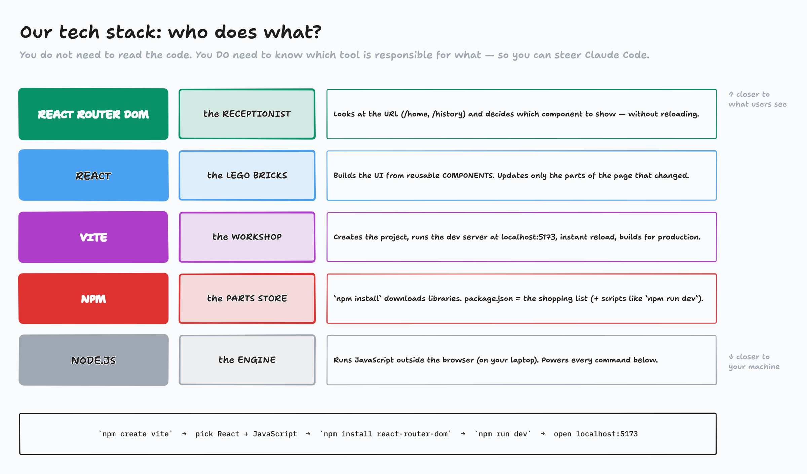
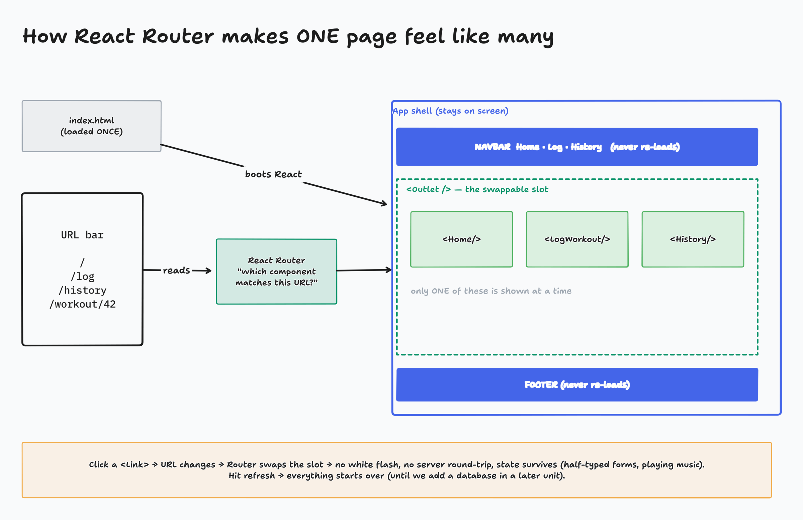
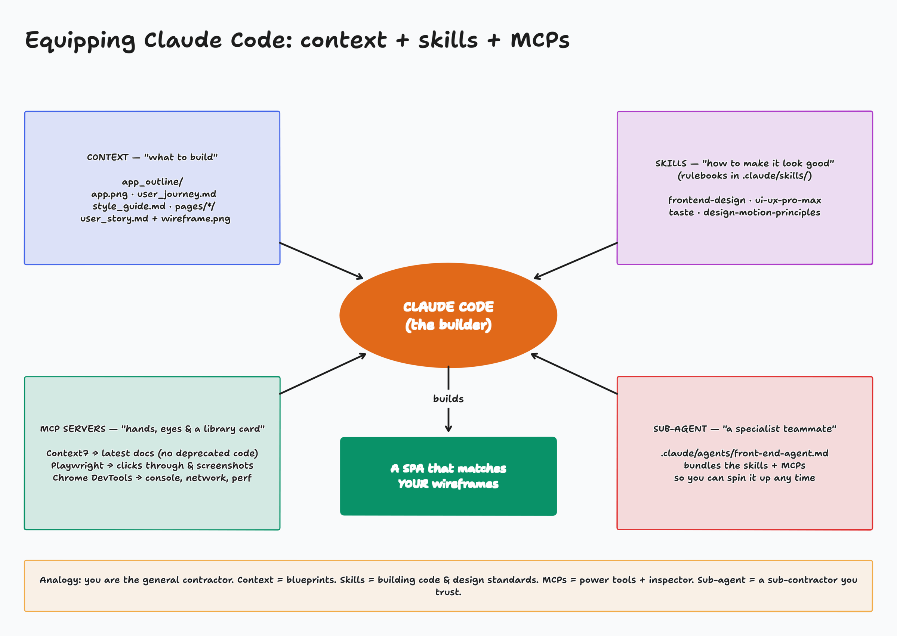
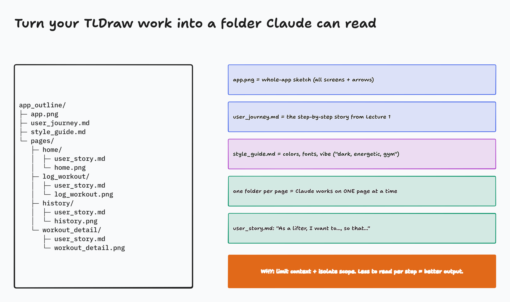
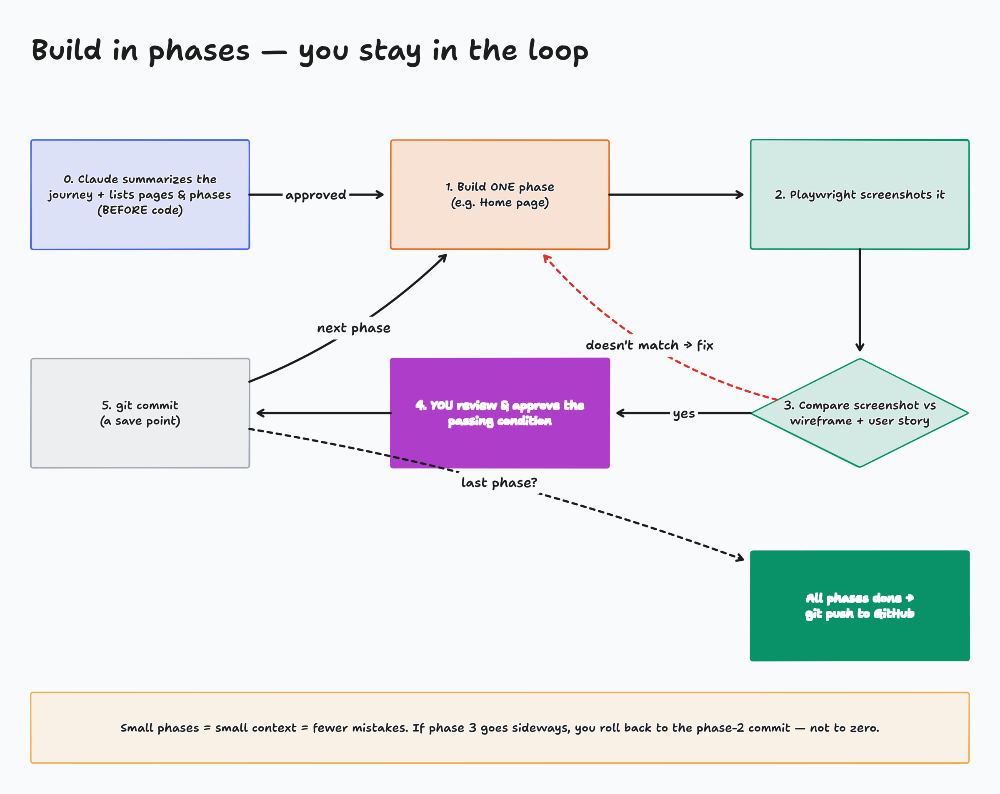

Last time you designed the intent. Today Claude Code builds it, and you stay the architect.
app_outline/ and build in phases, liveEvery click asks the server for a brand-new page. The screen flashes, scroll resets, anything you typed is gone.
The app loads once. Clicking swaps only the part that changed. Instant, smooth, and state survives.
Page: activity-spa-detective/index.html

A component is a reusable piece of UI: a button, a workout card, a navbar.
Build a <WorkoutCard> once, use it on Home and History.
When data changes, React updates only that part of the page.
Not automatically "the best," but popular, flexible, huge ecosystem, and it pairs well with Vite and Router.
// a component is a function that returns UI
function WorkoutCard({ name, date }) {
return (
<div className="card">
<h3>{name}</h3>
<p>{date}</p>
</div>
)
}

npm create vite@latest # Project name: liftlog # Framework: React # Variant: JavaScript # Linter: Oxlint (either is fine) # Install + start: No cd liftlog npm install npm install react-router-dom npm run dev # → http://localhost:5173
"Create a React + Vite project with react-router-dom using npm, named liftlog, and run it on the dev server."
Either way you get the same files. We won't deep-dive into them.

Pulls the latest docs for our stack, so no deprecated functions.
Drives a real browser: clicks, types, screenshots. It checks pages against your wireframes.
Reads the console, network, and performance. Debugging beyond what's visible.
claude mcp add --scope user playwright -- npx -y @playwright/mcp@latest
claude mcp add --scope user context7 -- npx -y @upstash/context7-mcp
claude mcp add --scope user chrome-devtools -- npx -y chrome-devtools-mcp@latest
# check: claude mcp list
Install: the one-liner on the class site. Check: /skills
your-project/
├── .claude/
│ └── skills/
│ ├── frontend-design/
│ │ └── SKILL.md
│ ├── ui-ux-pro-max/
│ │ ├── SKILL.md
│ │ ├── data/ ← 70+ files!
│ │ └── scripts/
│ ├── taste-skill/
│ └── design-motion-principles/
│ ├── SKILL.md
│ └── references/
└── ...

React + Vite, React Router with BrowserRouter
Name all four, so Claude uses them
No API. Data lives in the browser and refresh resets it.
Read user_journey → app.png → each page's wireframe + story → style guide
Use Context7 for current conventions
Playwright screenshot of each page, compared to its wireframe
Claude proposes phases + pass conditions. You approve each one.
Summarize the journey and list pages before any code
Full text: demo-kit/prompt.md. Paste it now and let Claude start.

Page: activity-whos-responsible/index.html
# in Claude: save what it learned /init # writes CLAUDE.md git init git add -A git commit -m "Phase 1: app shell + Home" # create the GitHub repo and push gh repo create liftlog --public --source=. --push
# .claude/agents/front-end-agent.md
---
name: front-end-agent
description: Builds, maintains, and tests React
SPAs with responsive, accessible UI/UX.
model: sonnet
mcpServers:
- context7
- playwright
- chrome-devtools
skills:
- frontend-design
- ui-ux-pro-max
- design-taste-frontend
- design-motion-principles
---
You are a Senior Front-End Engineer…
A specialist teammate that already knows its skills, MCPs, and workflow: analyze → plan → implement → test → document.
skills: uses each skill's name. Taste's name is design-taste-frontend.
app_outline/ and build the front-end SPAChecklist: skills folder ✓ · MCPs connected ✓ · app_outline ✓ · phases approved ✓ · pushed to GitHub ✓